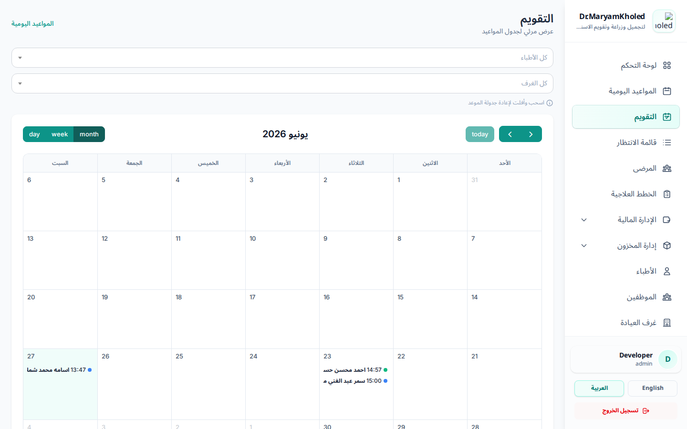

يوفّر التقويم عرضاً مرئياً شاملاً لجدول المواعيد، مكمّلاً لشاشة المواعيد اليومية التي تعرض يوماً واحداً في صورة جدول. تصل إليه من رابط التقويم في القائمة الجانبية.

أعلى التقويم أزرار لتبديل نمط العرض:
وللتنقّل بين الفترات استخدم سهمَي التالي/السابق، أو زر "today" للعودة إلى اليوم الحالي.
يمكنك تضييق ما يُعرض على التقويم عبر قائمتين منسدلتين أعلى الشاشة:
يتحدّث التقويم فور اختيار الفلتر دون إعادة تحميل الصفحة.
اضغط على أي موعد في التقويم لفتح نافذة تعرض تفاصيله (المريض، الطبيب، الغرفة، الوقت، والحالة). تُعرض ألوان دلالية للمواعيد حسب حالتها كما في شاشة المواعيد اليومية.
لإعادة جدولة موعد، اسحبه وأفلِته على اليوم/الوقت الجديد مباشرةً على التقويم — يُحدَّث الموعد فوراً. كما يمكن في عرض الأسبوع/اليوم تغيير مدة الموعد بسحب حافته.